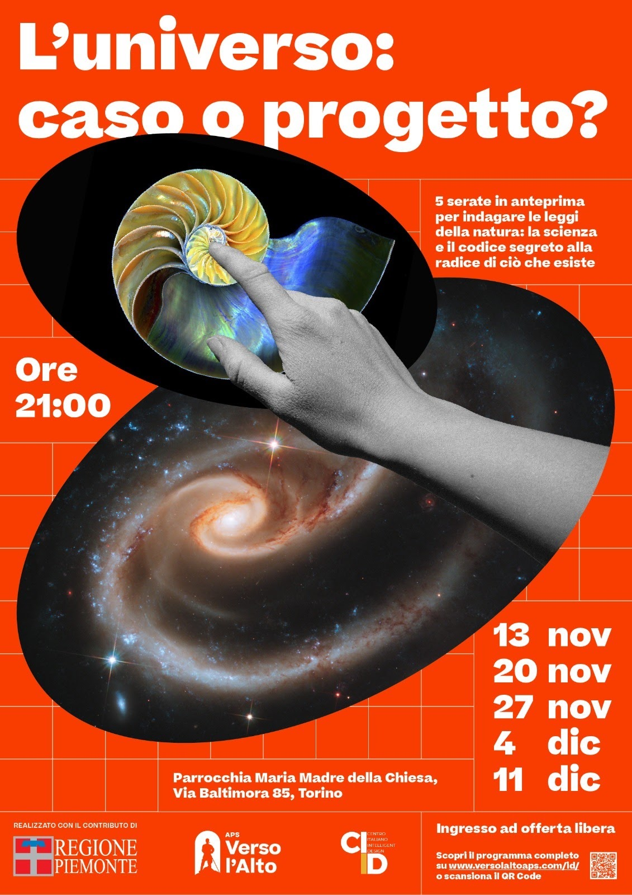

Torino · Maria Madre della Chiesa
Una casa, una famiglia, una missione
La comunità dell'Istituto del Verbo Incarnato a Torino: l'Adorazione eucaristica che non si interrompe, la vita della parrocchia, i giovani in formazione e i fedeli che chiedono ai loro padri di restare.
Ogni venerdì
9:00 – 18:00
18:30 feriale
10:30 e 18:30 domenica
Chi siamo
Una presenza viva nel quartiere
Siamo la comunità che si raduna attorno ai padri dell'Istituto del Verbo Incarnato e alla parrocchia di Maria Madre della Chiesa, in via Baltimora. Qui il carisma dell'Incarnazione prende la forma di cose semplici: l'Eucaristia esposta ogni giorno, i ragazzi che crescono, le famiglie che si incontrano, i giovani che si preparano al sacerdozio.
Questo sito raccoglie gli orari, le iniziative e i canali con cui restare in contatto. Se è la prima volta che ci visiti, comincia dall'Adorazione: è il cuore di tutto il resto.
Conosci la comunitàTre porte d'ingresso
Da dove cominciare
Adorazione
Il calendario delle ore di adorazione e la prenotazione dei turni, aggiornati ogni mese.
Calendario e turniLa Petizione
L'appello dei fedeli perché i padri dell'IVE restino a Torino: il testo, le firme, gli articoli.
Leggi e firmaPreghiere per i Padri
Sussidi e preghiere per sostenere spiritualmente i sacerdoti e i seminaristi della comunità.
Materiale e preghiereOgni settimana
Orari della chiesa
Parrocchia Maria Madre della Chiesa, via Baltimora 85. La chiesa è aperta per la preghiera personale negli orari di Adorazione.
Le preghiere comunitarie di devozione e gli orari supplementari di Adorazione si concordano con il sacerdote.
| S. Messa | Adorazione | Confessioni | |
|---|---|---|---|
| Lunedì | — | — | — |
| Martedì | 18:30 | — | su richiesta |
| Mercoledì | 8:00 · 18:30 | 17:30 | 17:45 – 18:20 |
| Giovedì | 8:00 · 18:30 | 17:30 | 17:45 – 18:20 |
| Venerdì | 18:30 | 9:00 – 18:00 | 17:45 – 18:20 |
| Sabato | 18:30 | 17:30 | — |
| Domenica | 10:30 · 18:30 | 17:30 | 17:45 – 18:20 |
Scorri per vedere tutte le colonne →
Vita della comunità
Prossimi appuntamenti

Cinque serate · Ingresso libero
«L'universo: caso o progetto?»
Cinque serate in anteprima per indagare le leggi della natura, la scienza e il codice segreto alla radice di ciò che esiste. Un percorso aperto a tutti, credenti e non.
Il motto dell'Istituto
«Hic Verbum caro factum est»
E il Verbo si fece carne e venne ad abitare in mezzo a noi
Gv 1,14I padri restino a Torino
I fedeli hanno chiesto al Cardinale Arcivescovo il ritorno della Famiglia Religiosa dell'IVE. Puoi leggere il testo, le testimonianze e aggiungere la tua firma.
Restiamo in contatto
Un canale solo per gli avvisi importanti
Sul canale WhatsApp pubblichiamo orari straordinari, variazioni e iniziative. La newsletter arriva una volta al mese: niente pubblicità, solo la vita della comunità.
Newsletter
Una email al mese
La vita della comunità, gli appuntamenti, il notiziario. Nessuna pubblicità, disdetta con un clic.
Iscriviti alla newsletterSi apre Google Gruppi: serve un account Google e un clic su «Partecipa al gruppo». In alternativa scrivi a iveatorino+subscribe@googlegroups.com.